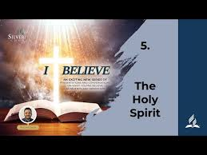

God the eternal Spirit was active with the Father and the Son in Creation, incarnation and redemption. He inspired the writers of Scripture. He filled Christ’s life with Power. He draws and convicts human beings; and those who respond He renews and transforms into the image of God. Sent by the Father and the Son to be always with His children, He extends spiritual gifts to the church, empowers it to bear witness to Christ, and in harmony with the Scriptures leads us into all truth. Amen!
Who Is the Holy Spirit?
The Bible reveals that the Holy Spirit is a person and not an impersonal force. Christ also spoke of Him as a distinct person. Scriptures also refer to the Spirit as a person. Acts 15:28; John 16:14;
Mathew 28:19; 2 Cor. 13:14.
The Holy Spirit is truly God! Scriptures views the Holy Spirit as God. Peter told Ananias that, in lying to the Holy Spirit, He had lied to not “to men but to God” Acts 5:3.4.
Jesus
defined the unpardonable sin as “blasphemy against the Spirit.’’ Matt.12:31,32; the Holy Spirit is God!
The Holy Spirit has divine attributes – let’s consider some of these attributes. Rom 8:2; John 16:13;
1 Cor.12:11; John 14:16
The works of God are also associated with the Holy Spirit. Creation and resurrection both involve Him. Gen 1:2; Job 33:4;
Ps.104:30; Rom.8:11
The Holy Spirit is considered equal with the Father and the Son in the baptism formula - Matt.28:19
The apostolic blessing - 2 Cor.13:14
The spiritual-gifts discourse -
1 Cor 12:4-6
From eternity, God the Holy Spirit lived within the Godhead as the third person. The Father, Son and Holy
Spirit are equally self-existent.
But though they are equal, each member of the Trinity has different functions as we already learnt in Fundamental Nos.2,3 &4
The truth about God the Holy Spirit is understood as seen in the life of Christ. He was actively involved in Christ’s birth Luke 1:35 (Birth).
He
confirmed Christ’s public ministry at the baptism Matt.3:16,17 (Baptism).
He brought the benefits of Christ’s atoning sacrifice and resurrection to humanity Rom.8:11 (Resurrection)
The promise of the Holy Spirit is made to all who receive Christ. In the Old Testament, He equipped
certain individuals to perform certain tasks Num. 24:2; Judges 6:34; 1 Sam 10:6 .
At times, He is “in” persons Exo.31:3: Isa.63:11.
The Holy Spirit will be manifested in a greater
way in the end times Joel 2:28; Acts 1:8; 2:2-4
The Mission of the Holy Spirit. Jesus promised the Holy Spirit as His personal representative. John 14: 16,18; 15:26; 16:7.
The
Holy Spirit proceeds from both the Father and the Son.
His Mission to the World. We can only know Christ through the influence of the Holy Spirit. 1 Cor.12:3
He convicts the world of sin. John 16:8,9.
His Mission to Believers. His sanctifying influence leads to obedience of Jesus Christ. I Peter 1:2; Acts 5:32; 1 Thes.5:19
What does the Spirit do to Believers? He assists believers. He is our Helper, Comforter, Counselor and Mediator. John 14:16; Heb.10:29.
He brings the
truth of Christ and is thus the Spirit of Truth. John 14:17; 15:16; 16:13,14.
He brings the presence of Christ to us. John 14:16-18; 16:7.
The Holy Spirit is the Spirit of Christ.
Phil.1:19.
The only way believers can abide in Christ is through the Spirit John 14:23.
The Holy Spirit is the True Vicar of Christ on the earth. Those chosen to lead the Church
must have an encounter with the Holy Spirit Acts 18:9. He puts men into their position Acts 20:28. The Holy Spirit equips the Church with special gifts for service Num. 11:17,25-26; 2 Sam 23:2
In the New Testament, the Holy Spirit distributed His gifts to the church as He determined. Acts 2:38; 1 Cor 12:7-11.
The Holy Spirit fills the hearts of believers. Paul’s query to the disciples at Ephesus,
“Did you receive the Holy Spirit when you believed?” Acts 19:2 is a crucial question to every believer. Acts 19:6 . Thus, the Holy Spirit not only convicts us of sin, we also receive the
baptism of the Holy Spirit – He fills our lives! Amen
The gift of the Holy Spirit is received at baptism Acts 2:38.
All believers were or are to be filled with the Holy Spirit Eph.5:18.
It is the absence of the Holy Spirit that makes the gospel ministry so powerless. Without the presence of the Spirit of God, no heart
will be touched, no sinner won to Christ. Thus, the Holy Spirit is vital. John 15:5
 Our greatest need as believers is the presence of the Holy
Spirit in our lives every single day – moment by moment
Spirit of the Living God,
Fall afresh on me X2
Break me, melt me, mold me, fill me..
Spirit of the Living God,
Fall afresh on me.
Have you received the Holy Spirit of God to lead you to our Savior and Friend Jesus Christ?
My answer: ____________________